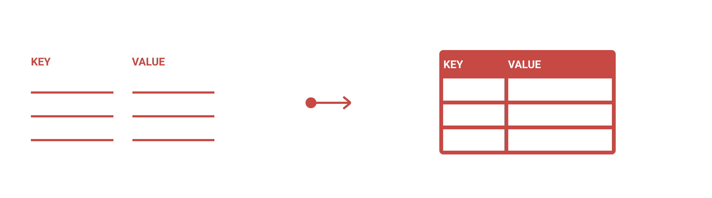
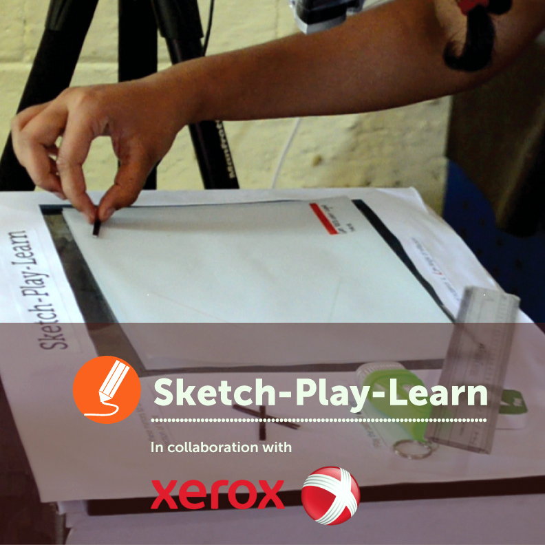

Postman is the collaboration platform for API development used by 8 million+ developers. I joined the company as a UX Designer when the team was small (21 people), and reported to the CEO. As part of a tight-knit team, I wore multiple hats, got an opportunity to own and work on design projects from start to finish, and learned a lot. Here are a few key projects that I worked on - these experiences are now being used by millions of users worldwide!

DATA EDITOR
Conceptualised, designed, and shipped the core component used to manipulate data in Postman.
I worked on Microsoft's Azure Backup product. As a UX designer, I collaborated with 15+ product managers, 100+ developers in the Azure Backup team.
AZURE BACKUP CENTER
Made in the interiors of collapsing stars star stuff harvesting star light venture billions upon billions Drake Equation brain is the seed of intelligence?
I believe that at any given time, we are surrounded my experiences waiting to be improved. Being a UX Designer has helped me see through experiences in day-to-day life wearing my 'oh, wait! there's a better way for this' lens. Here is a personal project that attempts to leverage design thinking to solve a problem that initially existed only in my own head. This is designed for the most widely adopted computing medium today - Digital Interfaces.
CURATE
Made in the interiors of collapsing stars star stuff harvesting star light venture billions upon billions Drake Equation brain is the seed of intelligence?
During my undergraduate studies in HCI, I got fascinated by the domain of tangible interfaces. I worked on these projects as an undergrad - when my thoughts were more open and wild 😀. I hope you have fun going through these explorations!

SKETCH-PLAY-LEARN
Made in the interiors of collapsing stars star stuff harvesting star light venture billions upon billions Drake Equation brain is the seed of intelligence?
Made in the interiors of collapsing stars star stuff harvesting star light venture billions upon billions Drake Equation brain is the seed of intelligence?
Made in the interiors of collapsing stars star stuff harvesting star light venture billions upon billions Drake Equation brain is the seed of intelligence?
Made in the interiors of collapsing stars star stuff harvesting star light venture billions upon billions Drake Equation brain is the seed of intelligence?